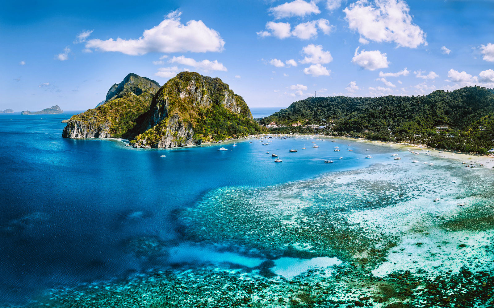
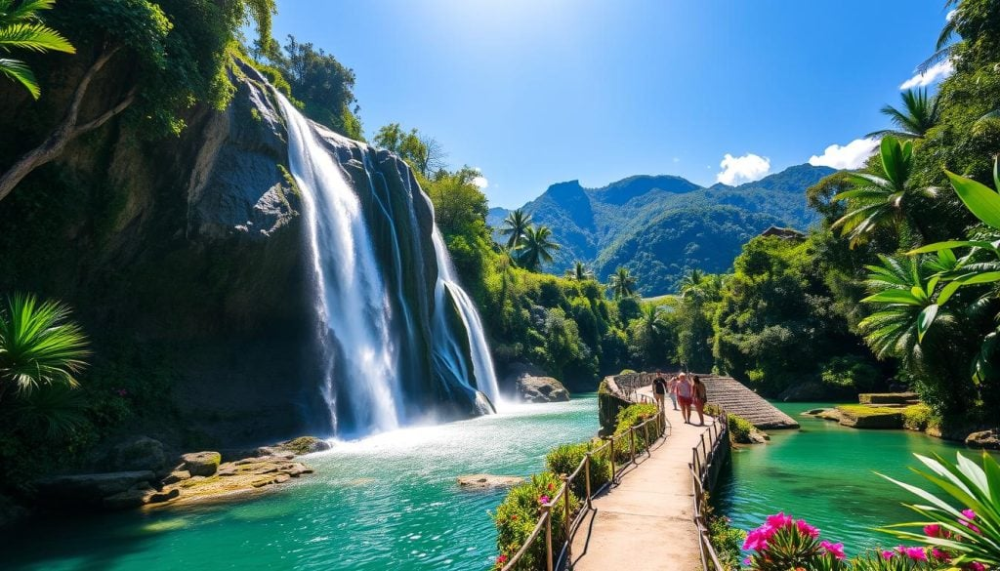
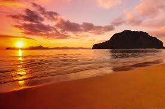

Explore Palawan
Famous for its dramatic landscapes and stunning lagoons, Palawan is a must-visit for those seeking nature's beauty.
Known for its hidden lagoons and snorkeling spots, it's my favorite beach destination among the rest.
El Nido, Palawan, is renowned for its breathtaking natural beauty, featuring dramatic limestone cliffs, crystal-clear waters, and stunning lagoons.
Top Spots in Palawan
- Puerto Princesa Underground River
- El Nido Islands
- Coron Wreck Diving
Things to Do
Palawan is perfect for diving, island hopping, and exploring hidden lagoons and caves. The untouched beauty is what makes it a world-class destination.




